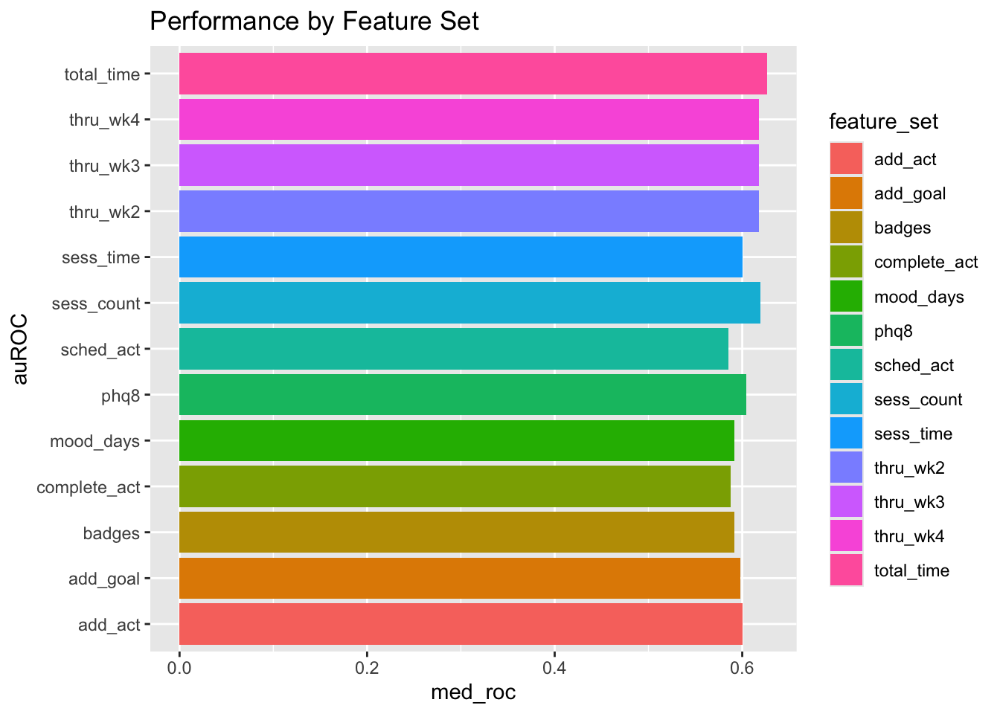

library(tidyverse)
library(tidymodels)Analysis Workflow Step 2: Inner Loop Model Selection
Setup
Load libraries
Source functions file
source("fun_moodivate.R")This functions file (fun_moodivate.R) contains many functions that are used throughout the Moodivate project analysis scripts. Functions split data, fit and evaluate models, and provide helper functionality for the modeling process. See all annotated code building functions within fun_moodivate.R.
Read in data
Read in results file (“results.csv”) created in 01_fit_inner.qmd. This file contains one row per model configuration (unique combination of model tuning parameters and feature set) for each held-out fold. Each row contains the model configuration information (outer split number, inner split number, feature set, hp1 [alpha/mixture], and hp2 [lambda/penalty]). Each row also contains performance metrics for the model fit in the held-in data and evaluated in the indicated validation set (held-out fold from inner loop).
cv_resample_type <- "nested"
results_glmnet <- read_csv(str_c("~/Desktop/dahne_lab/moodivate/results_",
cv_resample_type, "_glmnet.csv"),
show_col_types = FALSE) |>
mutate(algorithm = "glmnet") |>
relocate(algorithm, .before = feature_set) |>
glimpse()Rows: 1,534,500
Columns: 14
$ config_num <dbl> 1, 1, 1, 1, 1, 1, 1, 1, 1, 1, 1, 1, 1, 1, 1, 1, 1, 1, …
$ outer_split_num <dbl> 1, 1, 1, 1, 1, 1, 1, 1, 1, 1, 1, 1, 1, 1, 1, 1, 1, 1, …
$ inner_split_num <dbl> 1, 1, 1, 1, 1, 1, 1, 1, 1, 1, 1, 1, 1, 1, 1, 1, 1, 1, …
$ algorithm <chr> "glmnet", "glmnet", "glmnet", "glmnet", "glmnet", "glm…
$ feature_set <chr> "thru_wk2", "thru_wk2", "thru_wk2", "thru_wk2", "thru_…
$ hp1 <dbl> 0, 0, 0, 0, 0, 0, 0, 0, 0, 0, 0, 0, 0, 0, 0, 0, 0, 0, …
$ hp2 <dbl> 0.000335463, 0.000371118, 0.000410564, 0.000454201, 0.…
$ accuracy <dbl> 0.6774194, 0.6774194, 0.6774194, 0.6774194, 0.6774194,…
$ sens <dbl> 0.6666667, 0.6666667, 0.6666667, 0.6666667, 0.6666667,…
$ spec <dbl> 0.6875, 0.6875, 0.6875, 0.6875, 0.6875, 0.6875, 0.6875…
$ ppv <dbl> 0.6666667, 0.6666667, 0.6666667, 0.6666667, 0.6666667,…
$ npv <dbl> 0.6875, 0.6875, 0.6875, 0.6875, 0.6875, 0.6875, 0.6875…
$ roc_auc <dbl> 0.5875, 0.5875, 0.5875, 0.5875, 0.5875, 0.5875, 0.5875…
$ new_config_num <dbl> 1, 2, 3, 4, 5, 6, 7, 8, 9, 10, 11, 12, 13, 14, 15, 16,…results_glm <- read_csv(str_c("~/Desktop/dahne_lab/moodivate/results_",
cv_resample_type, "_glm.csv"),
show_col_types = FALSE) |>
glimpse()Rows: 3,900
Columns: 15
$ config_num <dbl> 1, 2, 3, 4, 5, 6, 7, 8, 9, 10, 11, 12, 13, 14, 15, 16,…
$ outer_split_num <dbl> 1, 1, 1, 1, 1, 1, 1, 1, 1, 1, 1, 1, 1, 1, 1, 1, 1, 1, …
$ inner_split_num <dbl> 1, 1, 1, 1, 1, 1, 1, 1, 1, 1, 1, 1, 1, 2, 2, 2, 2, 2, …
$ algorithm <chr> "glm", "glm", "glm", "glm", "glm", "glm", "glm", "glm"…
$ feature_set <chr> "thru_wk2", "thru_wk3", "thru_wk4", "sess_count", "tot…
$ hp1 <lgl> NA, NA, NA, NA, NA, NA, NA, NA, NA, NA, NA, NA, NA, NA…
$ hp2 <lgl> NA, NA, NA, NA, NA, NA, NA, NA, NA, NA, NA, NA, NA, NA…
$ sens <dbl> 0.6000000, 0.6000000, 0.6000000, 0.7333333, 0.6000000,…
$ spec <dbl> 0.6250, 0.5000, 0.4375, 0.7500, 0.7500, 0.8125, 0.7500…
$ ppv <dbl> 0.6000000, 0.5294118, 0.5000000, 0.7333333, 0.6923077,…
$ npv <dbl> 0.6250000, 0.5714286, 0.5384615, 0.7500000, 0.6666667,…
$ accuracy <dbl> 0.6129032, 0.5483871, 0.5161290, 0.7419355, 0.6774194,…
$ bal_accuracy <dbl> 0.6125000, 0.5500000, 0.5187500, 0.7416667, 0.6750000,…
$ roc_auc <dbl> 0.5666667, 0.5416667, 0.5250000, 0.7708333, 0.7458333,…
$ new_config_num <dbl> 1, 2, 3, 4, 5, 6, 7, 8, 9, 10, 11, 12, 13, 14, 15, 16,…results <- bind_rows(results_glmnet, results_glm) |>
arrange(outer_split_num, inner_split_num)
glimpse(results)Rows: 1,538,400
Columns: 15
$ config_num <dbl> 1, 1, 1, 1, 1, 1, 1, 1, 1, 1, 1, 1, 1, 1, 1, 1, 1, 1, …
$ outer_split_num <dbl> 1, 1, 1, 1, 1, 1, 1, 1, 1, 1, 1, 1, 1, 1, 1, 1, 1, 1, …
$ inner_split_num <dbl> 1, 1, 1, 1, 1, 1, 1, 1, 1, 1, 1, 1, 1, 1, 1, 1, 1, 1, …
$ algorithm <chr> "glmnet", "glmnet", "glmnet", "glmnet", "glmnet", "glm…
$ feature_set <chr> "thru_wk2", "thru_wk2", "thru_wk2", "thru_wk2", "thru_…
$ hp1 <dbl> 0, 0, 0, 0, 0, 0, 0, 0, 0, 0, 0, 0, 0, 0, 0, 0, 0, 0, …
$ hp2 <dbl> 0.000335463, 0.000371118, 0.000410564, 0.000454201, 0.…
$ accuracy <dbl> 0.6774194, 0.6774194, 0.6774194, 0.6774194, 0.6774194,…
$ sens <dbl> 0.6666667, 0.6666667, 0.6666667, 0.6666667, 0.6666667,…
$ spec <dbl> 0.6875, 0.6875, 0.6875, 0.6875, 0.6875, 0.6875, 0.6875…
$ ppv <dbl> 0.6666667, 0.6666667, 0.6666667, 0.6666667, 0.6666667,…
$ npv <dbl> 0.6875, 0.6875, 0.6875, 0.6875, 0.6875, 0.6875, 0.6875…
$ roc_auc <dbl> 0.5875, 0.5875, 0.5875, 0.5875, 0.5875, 0.5875, 0.5875…
$ new_config_num <dbl> 1, 2, 3, 4, 5, 6, 7, 8, 9, 10, 11, 12, 13, 14, 15, 16,…
$ bal_accuracy <dbl> NA, NA, NA, NA, NA, NA, NA, NA, NA, NA, NA, NA, NA, NA…results |>
write_csv(str_c("~/Desktop/dahne_lab/moodivate/results_",
cv_resample_type, "_all.csv"))Process metrics
Check for duplicates
nrow(results)[1] 1538400results <- results |>
distinct(outer_split_num, inner_split_num, feature_set, hp1, hp2,
.keep_all = TRUE)
nrow(results)[1] 1340400Some duplicates got made when I added hp2 values for glmnet algorithms.
Checks that breakdowns are as expected. Should be equal numbers of each value.
results |> janitor::tabyl(outer_split_num) outer_split_num n percent
1 44680 0.03333333
2 44680 0.03333333
3 44680 0.03333333
4 44680 0.03333333
5 44680 0.03333333
6 44680 0.03333333
7 44680 0.03333333
8 44680 0.03333333
9 44680 0.03333333
10 44680 0.03333333
11 44680 0.03333333
12 44680 0.03333333
13 44680 0.03333333
14 44680 0.03333333
15 44680 0.03333333
16 44680 0.03333333
17 44680 0.03333333
18 44680 0.03333333
19 44680 0.03333333
20 44680 0.03333333
21 44680 0.03333333
22 44680 0.03333333
23 44680 0.03333333
24 44680 0.03333333
25 44680 0.03333333
26 44680 0.03333333
27 44680 0.03333333
28 44680 0.03333333
29 44680 0.03333333
30 44680 0.03333333results |> janitor::tabyl(inner_split_num) inner_split_num n percent
1 134040 0.1
2 134040 0.1
3 134040 0.1
4 134040 0.1
5 134040 0.1
6 134040 0.1
7 134040 0.1
8 134040 0.1
9 134040 0.1
10 134040 0.1results |> janitor::tabyl(hp1) hp1 n percent valid_percent
0.0 121500 0.090644584 0.09090909
0.1 121500 0.090644584 0.09090909
0.2 121500 0.090644584 0.09090909
0.3 90000 0.067144136 0.06734007
0.3 31500 0.023500448 0.02356902
0.4 121500 0.090644584 0.09090909
0.5 121500 0.090644584 0.09090909
0.6 121500 0.090644584 0.09090909
0.7 90000 0.067144136 0.06734007
0.7 31500 0.023500448 0.02356902
0.8 121500 0.090644584 0.09090909
0.9 121500 0.090644584 0.09090909
1.0 121500 0.090644584 0.09090909
NA 3900 0.002909579 NAresults |> janitor::tabyl(hp2) hp2 n percent valid_percent
3.354630e-04 9900 0.007385855 0.007407407
3.711180e-04 9900 0.007385855 0.007407407
4.105640e-04 9900 0.007385855 0.007407407
4.542010e-04 9900 0.007385855 0.007407407
5.024780e-04 9900 0.007385855 0.007407407
5.558850e-04 9900 0.007385855 0.007407407
6.149690e-04 9900 0.007385855 0.007407407
6.803320e-04 9900 0.007385855 0.007407407
7.526430e-04 9900 0.007385855 0.007407407
8.326400e-04 9900 0.007385855 0.007407407
9.211400e-04 9900 0.007385855 0.007407407
1.019045e-03 9900 0.007385855 0.007407407
1.127358e-03 9900 0.007385855 0.007407407
1.247182e-03 9900 0.007385855 0.007407407
1.379742e-03 9900 0.007385855 0.007407407
1.526392e-03 9900 0.007385855 0.007407407
1.688629e-03 9900 0.007385855 0.007407407
1.868110e-03 9900 0.007385855 0.007407407
2.066667e-03 9900 0.007385855 0.007407407
2.286328e-03 9900 0.007385855 0.007407407
2.529337e-03 9900 0.007385855 0.007407407
2.798175e-03 9900 0.007385855 0.007407407
3.095587e-03 9900 0.007385855 0.007407407
3.424610e-03 9900 0.007385855 0.007407407
3.788604e-03 9900 0.007385855 0.007407407
4.191287e-03 9900 0.007385855 0.007407407
4.636770e-03 9900 0.007385855 0.007407407
5.129602e-03 9900 0.007385855 0.007407407
5.674816e-03 9900 0.007385855 0.007407407
6.277980e-03 9900 0.007385855 0.007407407
6.945252e-03 9900 0.007385855 0.007407407
7.683448e-03 9900 0.007385855 0.007407407
8.500105e-03 9900 0.007385855 0.007407407
9.403563e-03 9900 0.007385855 0.007407407
1.040305e-02 9900 0.007385855 0.007407407
1.150876e-02 9900 0.007385855 0.007407407
1.273200e-02 9900 0.007385855 0.007407407
1.408526e-02 9900 0.007385855 0.007407407
1.558235e-02 9900 0.007385855 0.007407407
1.723857e-02 9900 0.007385855 0.007407407
1.907082e-02 9900 0.007385855 0.007407407
2.109781e-02 9900 0.007385855 0.007407407
2.334025e-02 9900 0.007385855 0.007407407
2.582104e-02 9900 0.007385855 0.007407407
2.856550e-02 9900 0.007385855 0.007407407
3.160167e-02 9900 0.007385855 0.007407407
3.496054e-02 9900 0.007385855 0.007407407
3.867642e-02 9900 0.007385855 0.007407407
4.278725e-02 9900 0.007385855 0.007407407
4.733501e-02 9900 0.007385855 0.007407407
5.236615e-02 9900 0.007385855 0.007407407
5.793203e-02 9900 0.007385855 0.007407407
6.408950e-02 9900 0.007385855 0.007407407
7.090143e-02 9900 0.007385855 0.007407407
7.843739e-02 9900 0.007385855 0.007407407
8.677433e-02 9900 0.007385855 0.007407407
9.599738e-02 9900 0.007385855 0.007407407
1.062007e-01 9900 0.007385855 0.007407407
1.174886e-01 9900 0.007385855 0.007407407
1.299762e-01 9900 0.007385855 0.007407407
1.437911e-01 9900 0.007385855 0.007407407
1.590743e-01 9900 0.007385855 0.007407407
1.759820e-01 9900 0.007385855 0.007407407
1.946867e-01 9900 0.007385855 0.007407407
2.153795e-01 9900 0.007385855 0.007407407
2.382718e-01 9900 0.007385855 0.007407407
2.635971e-01 9900 0.007385855 0.007407407
2.916143e-01 9900 0.007385855 0.007407407
3.226094e-01 9900 0.007385855 0.007407407
3.568988e-01 9900 0.007385855 0.007407407
3.948328e-01 9900 0.007385855 0.007407407
4.367987e-01 9900 0.007385855 0.007407407
4.832251e-01 9900 0.007385855 0.007407407
5.345860e-01 9900 0.007385855 0.007407407
5.914060e-01 9900 0.007385855 0.007407407
6.542653e-01 9900 0.007385855 0.007407407
7.238057e-01 9900 0.007385855 0.007407407
8.007374e-01 9900 0.007385855 0.007407407
8.858460e-01 9900 0.007385855 0.007407407
9.800007e-01 9900 0.007385855 0.007407407
1.084163e+00 9900 0.007385855 0.007407407
1.199396e+00 9900 0.007385855 0.007407407
1.326877e+00 9900 0.007385855 0.007407407
1.467908e+00 9900 0.007385855 0.007407407
1.623929e+00 9900 0.007385855 0.007407407
1.796533e+00 9900 0.007385855 0.007407407
1.987482e+00 9900 0.007385855 0.007407407
2.198728e+00 9900 0.007385855 0.007407407
2.432425e+00 9900 0.007385855 0.007407407
2.690963e+00 9900 0.007385855 0.007407407
2.976979e+00 9900 0.007385855 0.007407407
3.293396e+00 9900 0.007385855 0.007407407
3.643444e+00 9900 0.007385855 0.007407407
4.030697e+00 9900 0.007385855 0.007407407
4.459111e+00 9900 0.007385855 0.007407407
4.933061e+00 9900 0.007385855 0.007407407
5.457385e+00 9900 0.007385855 0.007407407
6.037438e+00 9900 0.007385855 0.007407407
6.679144e+00 9900 0.007385855 0.007407407
7.389056e+00 9900 0.007385855 0.007407407
8.166170e+00 9900 0.007385855 0.007407407
9.025013e+00 9900 0.007385855 0.007407407
9.974182e+00 9900 0.007385855 0.007407407
1.102318e+01 9900 0.007385855 0.007407407
1.218249e+01 9900 0.007385855 0.007407407
1.346374e+01 9900 0.007385855 0.007407407
1.487973e+01 9900 0.007385855 0.007407407
1.644465e+01 9900 0.007385855 0.007407407
1.817415e+01 9900 0.007385855 0.007407407
2.008554e+01 9900 0.007385855 0.007407407
2.219795e+01 9900 0.007385855 0.007407407
2.453253e+01 9900 0.007385855 0.007407407
2.711264e+01 9900 0.007385855 0.007407407
2.996410e+01 9900 0.007385855 0.007407407
3.311545e+01 9900 0.007385855 0.007407407
3.659823e+01 9900 0.007385855 0.007407407
4.044730e+01 9900 0.007385855 0.007407407
4.470118e+01 9900 0.007385855 0.007407407
4.940245e+01 9900 0.007385855 0.007407407
5.459815e+01 9900 0.007385855 0.007407407
6.034029e+01 9900 0.007385855 0.007407407
6.668633e+01 9900 0.007385855 0.007407407
7.369979e+01 9900 0.007385855 0.007407407
8.145087e+01 9900 0.007385855 0.007407407
9.001713e+01 9900 0.007385855 0.007407407
9.948432e+01 9900 0.007385855 0.007407407
1.099472e+02 9900 0.007385855 0.007407407
1.215104e+02 9900 0.007385855 0.007407407
1.342898e+02 9900 0.007385855 0.007407407
1.484132e+02 9900 0.007385855 0.007407407
1.640219e+02 9900 0.007385855 0.007407407
1.812722e+02 9900 0.007385855 0.007407407
2.003368e+02 9900 0.007385855 0.007407407
2.214064e+02 9900 0.007385855 0.007407407
2.446919e+02 9900 0.007385855 0.007407407
NA 3900 0.002909579 NAresults |> janitor::tabyl(feature_set) feature_set n percent
add_act 300 0.0002238138
add_goal 300 0.0002238138
badges 300 0.0002238138
complete_act 300 0.0002238138
mood_days 300 0.0002238138
phq8 300 0.0002238138
sched_act 300 0.0002238138
sess_count 300 0.0002238138
sess_time 300 0.0002238138
thru_wk2 445800 0.3325872874
thru_wk3 445800 0.3325872874
thru_wk4 445800 0.3325872874
total_time 300 0.0002238138results |> janitor::tabyl(algorithm) algorithm n percent
glm 3900 0.002909579
glmnet 1336500 0.997090421hp1 values are showing up a little weird here for some reason, but they aggregate together correctly.
Median metrics across inner folds for model configurations
This process groups by outer_split_number, feature_set, hp1, and hp2 such that each group contains the 10 inner held-out folds per unique combination of outer split number, feature set, and tuning parameters. The summarize() function then averages model performance metrics across the 10 held-out folds (i.e., validation sets). Validation set performance will be used for model selection in script 03_fit_eval_outer.qmd.
metrics_avg <- results |>
group_by(outer_split_num, algorithm, feature_set, hp1, hp2) |>
summarize(across(c(accuracy, roc_auc,
sens, spec, ppv, npv),
median),
n_jobs = n(), .groups = "drop") |>
relocate(n_jobs) |>
arrange(desc(roc_auc)) |>
ungroup()Review
unique(metrics_avg$n_jobs)[1] 10The n_jobs variable should always be 10 jobs (10 inner held-out folds per combination of outer split number, feature set, and tuning parameters).
Performance: Through Week 2 Models
metrics_avg |>
filter(feature_set == "thru_wk2") |>
slice(1:50) |>
select(feature_set, algorithm, hp1, hp2, roc_auc) |>
print()# A tibble: 50 × 5
feature_set algorithm hp1 hp2 roc_auc
<chr> <chr> <dbl> <dbl> <dbl>
1 thru_wk2 glmnet 0.2 0.144 0.649
2 thru_wk2 glmnet 0.3 0.0960 0.649
3 thru_wk2 glmnet 0 54.6 0.649
4 thru_wk2 glmnet 0 60.3 0.649
5 thru_wk2 glmnet 0 66.7 0.649
6 thru_wk2 glmnet 0 73.7 0.649
7 thru_wk2 glmnet 0 81.5 0.649
8 thru_wk2 glmnet 0 90.0 0.649
9 thru_wk2 glmnet 0 99.5 0.649
10 thru_wk2 glmnet 0 110. 0.649
11 thru_wk2 glmnet 0 122. 0.649
12 thru_wk2 glmnet 0 134. 0.649
13 thru_wk2 glmnet 0 148. 0.649
14 thru_wk2 glmnet 0 164. 0.649
15 thru_wk2 glmnet 0 181. 0.649
16 thru_wk2 glmnet 0 200. 0.649
17 thru_wk2 glmnet 0 221. 0.649
18 thru_wk2 glmnet 0 245. 0.649
19 thru_wk2 glmnet 0.1 8.17 0.649
20 thru_wk2 glmnet 0.1 9.03 0.649
21 thru_wk2 glmnet 0.1 9.97 0.649
22 thru_wk2 glmnet 0.1 11.0 0.649
23 thru_wk2 glmnet 0.1 12.2 0.649
24 thru_wk2 glmnet 0.1 13.5 0.649
25 thru_wk2 glmnet 0.1 14.9 0.649
26 thru_wk2 glmnet 0.1 16.4 0.649
27 thru_wk2 glmnet 0.1 18.2 0.649
28 thru_wk2 glmnet 0.1 20.1 0.649
29 thru_wk2 glmnet 0.1 22.2 0.649
30 thru_wk2 glmnet 0.1 24.5 0.649
31 thru_wk2 glmnet 0.1 27.1 0.649
32 thru_wk2 glmnet 0.1 30.0 0.649
33 thru_wk2 glmnet 0.1 33.1 0.649
34 thru_wk2 glmnet 0.1 36.6 0.649
35 thru_wk2 glmnet 0.1 40.4 0.649
36 thru_wk2 glmnet 0.1 44.7 0.649
37 thru_wk2 glmnet 0.1 49.4 0.649
38 thru_wk2 glmnet 0.1 54.6 0.649
39 thru_wk2 glmnet 0.1 60.3 0.649
40 thru_wk2 glmnet 0.1 66.7 0.649
41 thru_wk2 glmnet 0.1 73.7 0.649
42 thru_wk2 glmnet 0.1 81.5 0.649
43 thru_wk2 glmnet 0.1 90.0 0.649
44 thru_wk2 glmnet 0.1 99.5 0.649
45 thru_wk2 glmnet 0.1 110. 0.649
46 thru_wk2 glmnet 0.1 122. 0.649
47 thru_wk2 glmnet 0.1 134. 0.649
48 thru_wk2 glmnet 0.1 148. 0.649
49 thru_wk2 glmnet 0.1 164. 0.649
50 thru_wk2 glmnet 0.1 181. 0.649metrics_avg |>
filter(feature_set == "thru_wk2") |>
pull(roc_auc) |>
hist()
Performance: Through Week 3 Models
metrics_avg |>
filter(feature_set == "thru_wk3") |>
select(feature_set, algorithm, hp1, hp2, roc_auc) |>
slice(1:50) |>
print()# A tibble: 50 × 5
feature_set algorithm hp1 hp2 roc_auc
<chr> <chr> <dbl> <dbl> <dbl>
1 thru_wk3 glmnet 0 54.6 0.649
2 thru_wk3 glmnet 0 60.3 0.649
3 thru_wk3 glmnet 0 66.7 0.649
4 thru_wk3 glmnet 0 73.7 0.649
5 thru_wk3 glmnet 0 81.5 0.649
6 thru_wk3 glmnet 0 90.0 0.649
7 thru_wk3 glmnet 0 99.5 0.649
8 thru_wk3 glmnet 0 110. 0.649
9 thru_wk3 glmnet 0 122. 0.649
10 thru_wk3 glmnet 0 134. 0.649
11 thru_wk3 glmnet 0 148. 0.649
12 thru_wk3 glmnet 0 164. 0.649
13 thru_wk3 glmnet 0 181. 0.649
14 thru_wk3 glmnet 0 200. 0.649
15 thru_wk3 glmnet 0 221. 0.649
16 thru_wk3 glmnet 0 245. 0.649
17 thru_wk3 glmnet 0.1 8.17 0.649
18 thru_wk3 glmnet 0.1 9.03 0.649
19 thru_wk3 glmnet 0.1 9.97 0.649
20 thru_wk3 glmnet 0.1 11.0 0.649
21 thru_wk3 glmnet 0.1 12.2 0.649
22 thru_wk3 glmnet 0.1 13.5 0.649
23 thru_wk3 glmnet 0.1 14.9 0.649
24 thru_wk3 glmnet 0.1 16.4 0.649
25 thru_wk3 glmnet 0.1 18.2 0.649
26 thru_wk3 glmnet 0.1 20.1 0.649
27 thru_wk3 glmnet 0.1 22.2 0.649
28 thru_wk3 glmnet 0.1 24.5 0.649
29 thru_wk3 glmnet 0.1 27.1 0.649
30 thru_wk3 glmnet 0.1 30.0 0.649
31 thru_wk3 glmnet 0.1 33.1 0.649
32 thru_wk3 glmnet 0.1 36.6 0.649
33 thru_wk3 glmnet 0.1 40.4 0.649
34 thru_wk3 glmnet 0.1 44.7 0.649
35 thru_wk3 glmnet 0.1 49.4 0.649
36 thru_wk3 glmnet 0.1 54.6 0.649
37 thru_wk3 glmnet 0.1 60.3 0.649
38 thru_wk3 glmnet 0.1 66.7 0.649
39 thru_wk3 glmnet 0.1 73.7 0.649
40 thru_wk3 glmnet 0.1 81.5 0.649
41 thru_wk3 glmnet 0.1 90.0 0.649
42 thru_wk3 glmnet 0.1 99.5 0.649
43 thru_wk3 glmnet 0.1 110. 0.649
44 thru_wk3 glmnet 0.1 122. 0.649
45 thru_wk3 glmnet 0.1 134. 0.649
46 thru_wk3 glmnet 0.1 148. 0.649
47 thru_wk3 glmnet 0.1 164. 0.649
48 thru_wk3 glmnet 0.1 181. 0.649
49 thru_wk3 glmnet 0.1 200. 0.649
50 thru_wk3 glmnet 0.1 221. 0.649metrics_avg |>
filter(feature_set == "thru_wk3") |>
pull(roc_auc) |>
hist()
Performance: Through Week 4 Models
metrics_avg |>
filter(feature_set == "thru_wk4") |>
select(feature_set, algorithm, hp1, hp2, roc_auc) |>
slice(1:50) |>
print()# A tibble: 50 × 5
feature_set algorithm hp1 hp2 roc_auc
<chr> <chr> <dbl> <dbl> <dbl>
1 thru_wk4 glmnet 0 54.6 0.649
2 thru_wk4 glmnet 0 60.3 0.649
3 thru_wk4 glmnet 0 66.7 0.649
4 thru_wk4 glmnet 0 73.7 0.649
5 thru_wk4 glmnet 0 81.5 0.649
6 thru_wk4 glmnet 0 90.0 0.649
7 thru_wk4 glmnet 0 99.5 0.649
8 thru_wk4 glmnet 0 110. 0.649
9 thru_wk4 glmnet 0 122. 0.649
10 thru_wk4 glmnet 0 134. 0.649
11 thru_wk4 glmnet 0 148. 0.649
12 thru_wk4 glmnet 0 164. 0.649
13 thru_wk4 glmnet 0 181. 0.649
14 thru_wk4 glmnet 0 200. 0.649
15 thru_wk4 glmnet 0 221. 0.649
16 thru_wk4 glmnet 0 245. 0.649
17 thru_wk4 glmnet 0.1 8.17 0.649
18 thru_wk4 glmnet 0.1 9.03 0.649
19 thru_wk4 glmnet 0.1 9.97 0.649
20 thru_wk4 glmnet 0.1 11.0 0.649
21 thru_wk4 glmnet 0.1 12.2 0.649
22 thru_wk4 glmnet 0.1 13.5 0.649
23 thru_wk4 glmnet 0.1 14.9 0.649
24 thru_wk4 glmnet 0.1 16.4 0.649
25 thru_wk4 glmnet 0.1 18.2 0.649
26 thru_wk4 glmnet 0.1 20.1 0.649
27 thru_wk4 glmnet 0.1 22.2 0.649
28 thru_wk4 glmnet 0.1 24.5 0.649
29 thru_wk4 glmnet 0.1 27.1 0.649
30 thru_wk4 glmnet 0.1 30.0 0.649
31 thru_wk4 glmnet 0.1 33.1 0.649
32 thru_wk4 glmnet 0.1 36.6 0.649
33 thru_wk4 glmnet 0.1 40.4 0.649
34 thru_wk4 glmnet 0.1 44.7 0.649
35 thru_wk4 glmnet 0.1 49.4 0.649
36 thru_wk4 glmnet 0.1 54.6 0.649
37 thru_wk4 glmnet 0.1 60.3 0.649
38 thru_wk4 glmnet 0.1 66.7 0.649
39 thru_wk4 glmnet 0.1 73.7 0.649
40 thru_wk4 glmnet 0.1 81.5 0.649
41 thru_wk4 glmnet 0.1 90.0 0.649
42 thru_wk4 glmnet 0.1 99.5 0.649
43 thru_wk4 glmnet 0.1 110. 0.649
44 thru_wk4 glmnet 0.1 122. 0.649
45 thru_wk4 glmnet 0.1 134. 0.649
46 thru_wk4 glmnet 0.1 148. 0.649
47 thru_wk4 glmnet 0.1 164. 0.649
48 thru_wk4 glmnet 0.1 181. 0.649
49 thru_wk4 glmnet 0.1 200. 0.649
50 thru_wk4 glmnet 0.1 221. 0.649metrics_avg |>
filter(feature_set == "thru_wk4") |>
pull(roc_auc) |>
hist()
Performance: Single-Feature Group Models
metrics_avg |>
filter(!str_detect(feature_set, "thru_")) |>
select(feature_set, algorithm, roc_auc) |>
slice(1:50) |>
print()# A tibble: 50 × 3
feature_set algorithm roc_auc
<chr> <chr> <dbl>
1 total_time glm 0.671
2 total_time glm 0.665
3 total_time glm 0.660
4 sess_count glm 0.656
5 phq8 glm 0.654
6 total_time glm 0.65
7 add_act glm 0.646
8 total_time glm 0.646
9 total_time glm 0.646
10 sess_count glm 0.643
11 add_act glm 0.643
12 add_act glm 0.643
13 sched_act glm 0.640
14 mood_days glm 0.640
15 total_time glm 0.639
16 sess_count glm 0.639
17 total_time glm 0.638
18 total_time glm 0.638
19 total_time glm 0.638
20 sess_time glm 0.637
21 add_goal glm 0.637
22 total_time glm 0.636
23 add_act glm 0.636
24 phq8 glm 0.634
25 sess_count glm 0.633
26 total_time glm 0.633
27 sess_count glm 0.633
28 total_time glm 0.632
29 mood_days glm 0.632
30 complete_act glm 0.631
31 add_goal glm 0.631
32 total_time glm 0.630
33 phq8 glm 0.630
34 sess_count glm 0.630
35 total_time glm 0.630
36 sess_time glm 0.629
37 mood_days glm 0.629
38 sess_time glm 0.629
39 sess_time glm 0.629
40 add_goal glm 0.628
41 total_time glm 0.628
42 sess_count glm 0.627
43 sess_count glm 0.627
44 total_time glm 0.627
45 phq8 glm 0.626
46 complete_act glm 0.626
47 mood_days glm 0.626
48 total_time glm 0.625
49 add_act glm 0.625
50 sched_act glm 0.624Performance: By Algorithm
metrics_avg |>
group_by(algorithm) |>
summarize(median_auc = median(roc_auc),
min_auc = min(roc_auc),
max_auc = max(roc_auc))# A tibble: 2 × 4
algorithm median_auc min_auc max_auc
<chr> <dbl> <dbl> <dbl>
1 glm 0.589 0.421 0.671
2 glmnet 0.597 0.431 0.649Performance: Across Feature Sets
Median performance across ALL configurations
metrics_avg |>
summarize(median_auc = median(roc_auc),
min_auc = min(roc_auc),
max_auc = max(roc_auc))# A tibble: 1 × 3
median_auc min_auc max_auc
<dbl> <dbl> <dbl>
1 0.597 0.421 0.671Performance of best configurations
set.seed(11397)
configs_best <- metrics_avg |>
# negate hp1 so that we can prefer the max (hp1 closest to 0)
mutate(inv_hp1 = hp1 * -1) |>
group_by(outer_split_num) |>
# select config w max roc_auc with lowest hp1 (highest inv_hp1)
# keep remaining ties (i.e., same roc_auc and same hp1)
slice_max(order_by = tibble(roc_auc, inv_hp1), with_ties = TRUE) |>
ungroup() |>
group_by(outer_split_num) |>
# among remaining ties, randomly select single config
slice_sample(n = 1) |>
select(-inv_hp1) |>
ungroup()
configs_best |>
select(outer_split_num, algorithm, feature_set, hp1, hp2, roc_auc) |>
print(n = Inf)# A tibble: 30 × 6
outer_split_num algorithm feature_set hp1 hp2 roc_auc
<dbl> <chr> <chr> <dbl> <dbl> <dbl>
1 1 glm total_time NA NA 0.65
2 2 glm sess_time NA NA 0.629
3 3 glm mood_days NA NA 0.598
4 4 glm total_time NA NA 0.671
5 5 glm total_time NA NA 0.630
6 6 glm total_time NA NA 0.638
7 7 glm sess_count NA NA 0.627
8 8 glm total_time NA NA 0.665
9 9 glm total_time NA NA 0.609
10 10 glmnet thru_wk3 0 54.6 0.643
11 11 glmnet thru_wk2 0.1 0.159 0.648
12 12 glm total_time NA NA 0.606
13 13 glmnet thru_wk2 0 33.1 0.617
14 14 glm total_time NA NA 0.625
15 15 glmnet thru_wk2 0 1.62 0.648
16 16 glm total_time NA NA 0.639
17 17 glm total_time NA NA 0.660
18 18 glm sess_count NA NA 0.639
19 19 glm phq8 NA NA 0.654
20 20 glm total_time NA NA 0.627
21 21 glm add_act NA NA 0.636
22 22 glm total_time NA NA 0.633
23 23 glmnet thru_wk4 0.6 0.0428 0.633
24 24 glmnet thru_wk4 0.4 0.106 0.640
25 25 glm total_time NA NA 0.624
26 26 glm total_time NA NA 0.646
27 27 glmnet thru_wk2 0.2 0.144 0.649
28 28 glm total_time NA NA 0.628
29 29 glm total_time NA NA 0.636
30 30 glm total_time NA NA 0.623configs_best |>
ggplot(aes(x = roc_auc)) +
geom_histogram() `stat_bin()` using `bins = 30`. Pick better value with `binwidth`.configs_best |>
pull(roc_auc) |>
median()[1] 0.6357465Save average metrics file (all feature sets)
metrics_avg |>
arrange(outer_split_num, feature_set, hp1, hp2) |>
readr::write_csv("~/Desktop/dahne_lab/moodivate/metrics_inner_avg.csv")Plot tuning parameters
This plot shows performance as a function of alpha/mixture (hp1) and lambda/penalty (hp2) separately for each feature_set. With shuffled data, there is no real pattern of performance as a function of tuning parameters, creating odd-looking output.
With real data, we will confirm that the plot captures a peak (i.e., local maximum) in performance (auROC) before continuing to outer loop model fitting and evaluation. If performance is increasing toward one end of the range for either tuning parameter, we will NOT yet proceed to fitting and evaluating models in the outer loop (in 03_fit_eval_outer.qmd). First, we will add model configurations that expand the range, run those additional configurations in the inner loop, and re-evaluate model performance as a function of tuning parameters.
metrics_plot <- results |>
filter(algorithm == "glmnet") |>
# don't group by outer_split_num, otherwise too many data points
group_by(feature_set, hp1, hp2) |>
summarize(across(c(accuracy, roc_auc,
sens, spec, ppv, npv),
median),
n_jobs = n(), .groups = "drop") |>
relocate(n_jobs) |>
arrange(desc(roc_auc)) |>
ungroup() |>
mutate(feature_set = case_when(
feature_set == "thru_wk2" ~ "Weeks 1 & 2",
feature_set == "thru_wk3" ~ "Weeks 1 - 3",
feature_set == "thru_wk4" ~ "Weeks 1 - 4",
TRUE ~ NA_character_
))
feature_sets <- unique(metrics_plot$feature_set)
for (i in feature_sets) {
results_i <- metrics_plot %>%
filter(feature_set == i)
plot_title <- stringr::str_c("Plotting glmnet hyperparameters for ",
i, " models")
plot_i <- results_i %>%
mutate(hp1 = factor(hp1, ordered = TRUE)) %>%
ggplot(mapping = aes(x = log(hp2),
y = roc_auc,
group = hp1,
color = hp1)) +
geom_point(size = 0.1) +
facet_wrap(vars(hp1)) +
scale_color_discrete(name = "mixture (alpha)") +
labs(title = plot_title, x = "penalty (lambda)", y = "auROC")
print(plot_i)
}
Plot by feature set
metrics_plot <- results |>
# don't group by outer_split_num, otherwise too many data points
group_by(algorithm, feature_set, hp1, hp2) |>
summarize(across(c(accuracy, roc_auc,
sens, spec, ppv, npv),
median),
n_jobs = n(), .groups = "drop") |>
relocate(n_jobs) |>
arrange(desc(roc_auc)) |>
ungroup()
metrics_plot <- metrics_plot |>
group_by(feature_set) |>
summarize(med_roc = median(roc_auc)) |>
ungroup()
# larger feature sets
metrics_plot |>
ggplot(mapping = aes(x = feature_set,
fill = feature_set,
y = med_roc)) +
geom_bar(stat = "identity") +
coord_flip() +
labs(title = "Performance by Feature Set",
x = "auROC")
# simpler feature sets